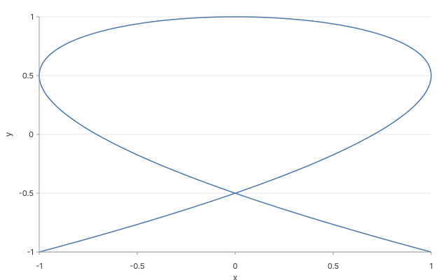
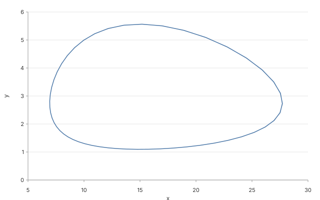
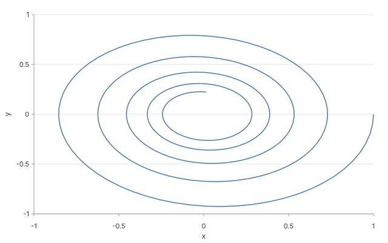
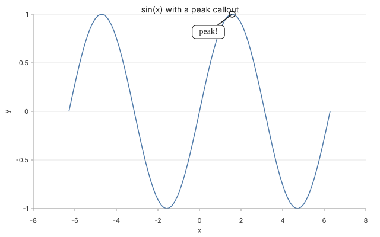

Why is a circle's edge 2πr?
Watch the circle unwrap. Its edge is exactly 2 × π × radius — every time, no exceptions.
Type a sentence, get an animated chart. Drag a slider, watch the wave change. For kids 8–15. Built on a library that an AI agent (Claude, ChatGPT, Gemini) can call directly.

↑ This is the exact bytes an AI agent gets back from one call to glyph_story.
A wave, a spiral, a wiggly heartbeat, a circle that becomes a line. All made by an agent — no drawing skills required.

A figure-eight
Two waves, one sideways, one up-and-down. Together they draw a loop.

A spiral, drawing itself
The line writes itself onto the page like a pen — same trick a math teacher uses on a chalkboard.

Foxes and rabbits
When the rabbits boom, the foxes boom. Then the rabbits crash, then the foxes do. Forever.

A swing that slows down
Push a swing once and let go. Each swing is a little smaller. This is what that looks like in math.
You type something like "show me a sine wave" — to an AI helper like Claude or ChatGPT.
Behind the scenes, the AI calls glyph_story and gets back a JSON recipe — like a cooking recipe but for a picture.
{
"intent": "show me a sine wave",
"audience": "kid"
}
The recipe gets turned into an animated SVG — like the one at the top. Same recipe = same picture, every single time.
The same math behind the sine wave above looks completely different in three dimensions. Drag to spin. Pinch to zoom.
Tap a shape · drag to spin
Plato thought these were the building blocks of the universe. Mathematicians later proved there are EXACTLY 5.
Drag to spin · watch the formula
z = sin(r − t) · e−r/10
The same sin from the hero at the top — but now in 3D, making water-like ripples that radiate outward.
Sliders let you change the shape of the wave. Move them around — see what happens.
Three short math stories. Each one plays out over a few seconds — like a comic strip, but the panels animate themselves.

Watch the circle unwrap. Its edge is exactly 2 × π × radius — every time, no exceptions.

The highest point of a curve. Math has a word for it ("maximum"). So do we — "the peak."

A wave never stops being a wave. The dot rides it forever — that's what "cyclic" means.
Type what you want to see. We'll send you to the playground with the recipe pre-filled.
Glyph is open-source software an AI assistant uses to draw math. Everything here was generated by a deterministic recipe — no surprise behavior, no telemetry, no ads, no tracking, no account required.
Apache 2.0 licensed. All the code is on GitHub. Fork it, audit it, run it locally.
This page has no analytics, no third-party scripts, no cookies. The address bar's URL is the only thing that knows you visited.
Every chart on this page comes from a JSON spec that an AI can write. The same spec always renders the same bytes — no model drift.
Glyph ships as a 50-verb MCP server Claude / ChatGPT / Gemini can call directly. The hero animation up top is one MCP call.
Joy of Math is part of Glyph — a deterministic chart-and-compute library for AI agents. Read the README →